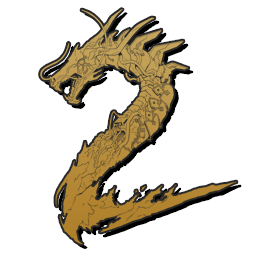

 Shadow Warrior 2
Details
 |
|
| Spielzeit | Nicht gespielt |
| Letzte Aktivität | Nie |
| Hinzugefügt | 25.11.2022 23:04:10 |
| Modifiziert | 25.11.2022 23:17:45 |
| Fertigstellungsstatus | Not Played |
| Bibliothek | Steam |
| Quelle | Steam |
| Plattform | PC (Windows) |
| Veröffentlichungsdatum | 13.10.2016 |
| Community Bewertungen | 86 |
| Kritiker Punkte | 78 |
| Benutzerwertung | |
| Genre | Action Adventure |
| Entwickler | Flying Wild Hog |
| Verleger | Devolver Digital |
| Eigenschaft | Achievements Cloud Saves Controller Support Co-op Multiplayer Remote Play Single Player Steam Karten |
| Links | Communityhub Diskussionen Guides Neuigkeiten Shopseite PCGamingWiki Errungenschaften |
| Tag | Action Adventure Comedy Co-Op Demons First-Person FPS Funny Gore Hack and Slash Loot Looter Shooter Memes Multiplayer Ninja Open World Parkour Shooter Single Player Swordplay |
Beschreibung
Shadow Warrior 2 is the stunning evolution of Flying Wild Hog’s offbeat first-person shooter following the further misadventures of former corporate shogun Lo Wang. Now surviving as a reclusive mercenary on the edge of a corrupted world, the formidable warrior must again wield a devastating combination of guns, blades, magic and wit to strike down the demonic legions overwhelming the world. Battle alongside allies online in four-player co-op or go it alone in spectacular procedurally-generated landscapes to complete daring missions and collect powerful new weapons, armor, and arcane relics of legend.
The once feared warrior now lives in the shifting wildlands outside the reach of his enemies and the neon glow of Zilla’s cybernetic metropolis, scratching out a meager existence as a hired sword for the local Yakuza clans. When a simple mission goes wrong, Lo Wang is drawn into a volatile conflict between a brilliant young scientist, his nemesis Orochi Zilla, and the demonic forces that have become unsettled in our world. The sharp-tongued hero must once again wield lethal blades, staggering firepower, and archaic magic to purge the world of evil.
Blades and Bullets: Lo Wang delivers his own brand full throttle brutality with an expanded array of over 70 lethal blades and explosive firearms to overcome the demonic opposition. Become a whirlwind of steel and blood with razor sharp katana, short swords, crescent blades, and hand claws or unleash a hellish symphony of ornate firearms to decimate your enemies.
Four Player Co-Op: Battle through the expansive campaign alone or team up as a four-player typhoon of destruction online in campaign co-op mode. Tackle challenging primary missions or thrilling side quests while maintaining your own ninja style with customizable armor, items, and valuable loot from your triumphs.
Procedural Environments: The breach between the human and demon realms created an interdimensional hernia resulting in constant shifts to the world of Shadow Warrior 2. Procedurally generated landscapes and paths bring new twists and turns to once familiar terrain and routine missions.
Brutal Damage System: Choose your weapon based on the situation at hand and then dismantle everything that stands in your path with an advanced gore system. Use precision blade strikes to separate limbs and heads or switch to heavy ordinance and blow a hole right through colossal beasts.
Custom Upgrade System: Upgrade weapons in your arsenal with up to three stones at once to improve performance or augment them with devastating elemental effects. Collect karma, amulets, and armor to enhance Lo Wang’s power and shift his death-dealing artistry into overdrive.
The Shadow Warrior series started back in the 90s with Shadow Warrior Classic that was remastered and released on Steam by Devolver Digital and 3D Realms as Shadow Warrior Classic Redux. Then in 2013, Flying Wild Hog and Devolver Digital released the bold reimagining of the legend of Lo Wang with the modern classic Shadow Warrior.
http://store.steampowered.com/app/233130/
http://store.steampowered.com/app/225160/
http://store.steampowered.com/app/238070/
STORY
Five years have passed since Lo Wang shattered the alliance between his deceitful former boss and the ancient gods of the shadow realm. Despite noble intentions, Lo Wang’s efforts to annihilate the darkness corrupted the world, creating a strange and savage new order where humans and demons live side by side.The once feared warrior now lives in the shifting wildlands outside the reach of his enemies and the neon glow of Zilla’s cybernetic metropolis, scratching out a meager existence as a hired sword for the local Yakuza clans. When a simple mission goes wrong, Lo Wang is drawn into a volatile conflict between a brilliant young scientist, his nemesis Orochi Zilla, and the demonic forces that have become unsettled in our world. The sharp-tongued hero must once again wield lethal blades, staggering firepower, and archaic magic to purge the world of evil.
FEATURES
Blades and Bullets: Lo Wang delivers his own brand full throttle brutality with an expanded array of over 70 lethal blades and explosive firearms to overcome the demonic opposition. Become a whirlwind of steel and blood with razor sharp katana, short swords, crescent blades, and hand claws or unleash a hellish symphony of ornate firearms to decimate your enemies.
Four Player Co-Op: Battle through the expansive campaign alone or team up as a four-player typhoon of destruction online in campaign co-op mode. Tackle challenging primary missions or thrilling side quests while maintaining your own ninja style with customizable armor, items, and valuable loot from your triumphs.
Procedural Environments: The breach between the human and demon realms created an interdimensional hernia resulting in constant shifts to the world of Shadow Warrior 2. Procedurally generated landscapes and paths bring new twists and turns to once familiar terrain and routine missions.
Brutal Damage System: Choose your weapon based on the situation at hand and then dismantle everything that stands in your path with an advanced gore system. Use precision blade strikes to separate limbs and heads or switch to heavy ordinance and blow a hole right through colossal beasts.
Custom Upgrade System: Upgrade weapons in your arsenal with up to three stones at once to improve performance or augment them with devastating elemental effects. Collect karma, amulets, and armor to enhance Lo Wang’s power and shift his death-dealing artistry into overdrive.
Shadow Warrior Series
The Shadow Warrior series started back in the 90s with Shadow Warrior Classic that was remastered and released on Steam by Devolver Digital and 3D Realms as Shadow Warrior Classic Redux. Then in 2013, Flying Wild Hog and Devolver Digital released the bold reimagining of the legend of Lo Wang with the modern classic Shadow Warrior.
http://store.steampowered.com/app/233130/
http://store.steampowered.com/app/225160/
http://store.steampowered.com/app/238070/